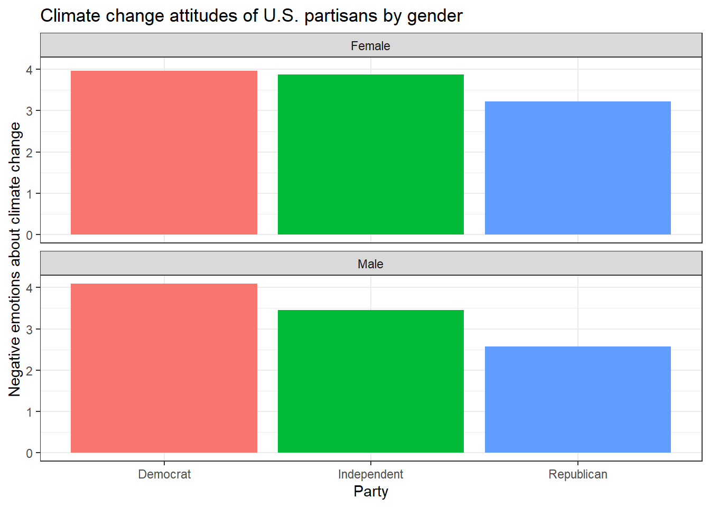
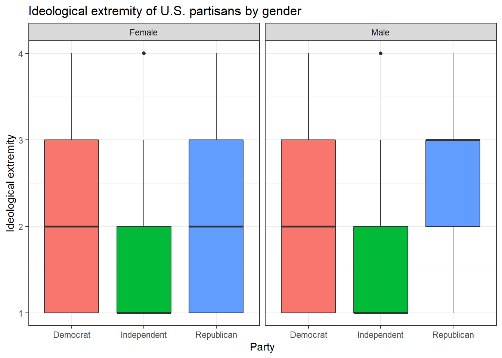

10 Exercise 3: Test your knowledge
After working through Exercise 3, you’ll…
- be able to see a graph and recreate it with
ggplot2 - be able to see a problem and customize a plot with
ggplot2to solve it
10.1 Task 1
The data set glbwarm comes pre-installed with the processR package that we will be working with soon. The data comprises 815 US individuals (417 females, 398 males) who agreed to engage in online questionnaires. They roughly represent the population of the United States.
Let’s install / activate the processR package first and assign the glbwarm data to a source object.
# installing/loading the package:
if(!require(processR)) {
install.packages("processR");
require(processR)
} #load / install+load processR
data <- processR::glbwarmFamiliarize yourself with the data set (Hint: use the help() / ? function) and then try to reproduce this plot with dplyr and ggplot2. (Hint: You can hide the legend by adding theme(legend.position = "none") to your plot.)

10.2 Task 2
Now, try to reproduce this graph. (Hint: You will need to recode the ideology variable in a way that higher values represent stronger attitudes, independent of partisanship.)

10.3 Task 3
Can you make a chart that breaks down the relationship between age, negative emotions about climate change, and ideological extremity for the different sexes AND parties?
When you’re ready to look at the solutions, you can find them here: Solutions for Exercise 3.
We have officially finished our chapters on data management and visualization! We can move on to data analysis and a new Tutorial: Linear regression.